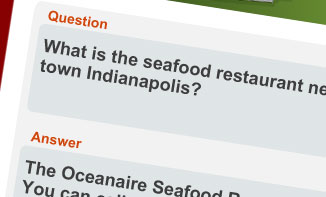
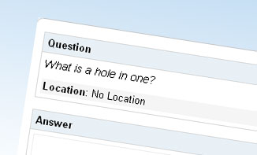

Hello.
I'm Todd Baker, a freelance Web Developer and Designer.
I specialize in User Interface design/architecture of applications.
I also sling code in Javascript, PHP, Python, and Java.
My Services...
WHAT I DO
Web Development >>
I’ve been developing for the web for over 10 years, of which six have been in a professional setting. The list to the right lists most (but not all) technologies and methodologies that I’ve either worked extensively with, or are currently using right now.
I’m very familiar with MVC architecture as well as front-end best practices with respects to: Ajax, performance, and cross browser techniques.
Some of the tools I use include: textmate, eclipse, Photoshop, Fireworks, Illustrator, and Parallels.
- HTML
- CSS
- AJAX
- Javascript
- jQuery
- mooTools
- YUI
- MySQL
- MSSQL
- Cassandra
- Java
- Struts
- Spring
- PHP
- CakePHP
- CodeIgnighter
- Agavi
- WordPress
- Python
- Django
- C#/.Net
- APIs
- Salesforce
- Delicious
- Digg
- Apache
- Memcache
- TDD
- Unit Testing
- Agile/Scrum
User Experience >>
Putting your users' needs first in any project will always yield great results. That's why I use these techniques extensively through out the design process.
- Information Architecture
- Wire Framing
- Prototyping
- Usability Testing
What I've done in the past...
MY WORK
I’ve been fortunate to work at some great startups (one, who isn't such a startup anymore!):
Full Time:


Freelance/Contractor:

With the bulk of my professional career coming from within private companies, I’m a little limited on how much of my work I can publicly show, but here are a few things to check out:
ChaCha - Answer Detail Page
- Responsible for:
-
- HTML
- CSS
- Javascript
- Information Architecture
- Visual Design
- Java/Struts Development
ChaCha - Guide Application
- Responsible for:
-
- HTML
- CSS
- Javascript
- Information Architecture
- Visual Design
- Java/Struts Development
Personal - Hamming Distance
- Responsible for:
-
- HTML
- CSS
- Javascript
- Visual Design
- PHP Development
Who is Todd?...
ABOUT ME
I've been developing for the web for over 10 years, six of which have been in a professional setting. My passion is designing and developing web sites and applications that are user centric and contain only the most impeccable markup and code.
While I’m most comfortable whipping out a prototype, information architecture, interaction diagram, or jQuery plugin, I’m very well versed with server side technologies and even welcome data persistence challenges.
In my spare time, you can find me checking out almost any band that I can find, watching movies (Caddyshack for the 56th time), playing guitar or hitting the links for a nice round of small ball.
Current Home: Indianapolis, IN
Hit me up...
SAY HELLO
Feel free to send me an email anytime. If its just a ‘hey, how ya doin’ email, it may take me a day or two to get back to you, but I will respond.
If you’re inquiring about hiring me for a project, please give me as much info as possible pertaining to the scope, including (if applicable): deadlines, budget, technical requirements, etc.
I make it a point to never quote a price for any project until I have a full understanding of your needs.
Currently accepting new projects.
You can find more of me here: